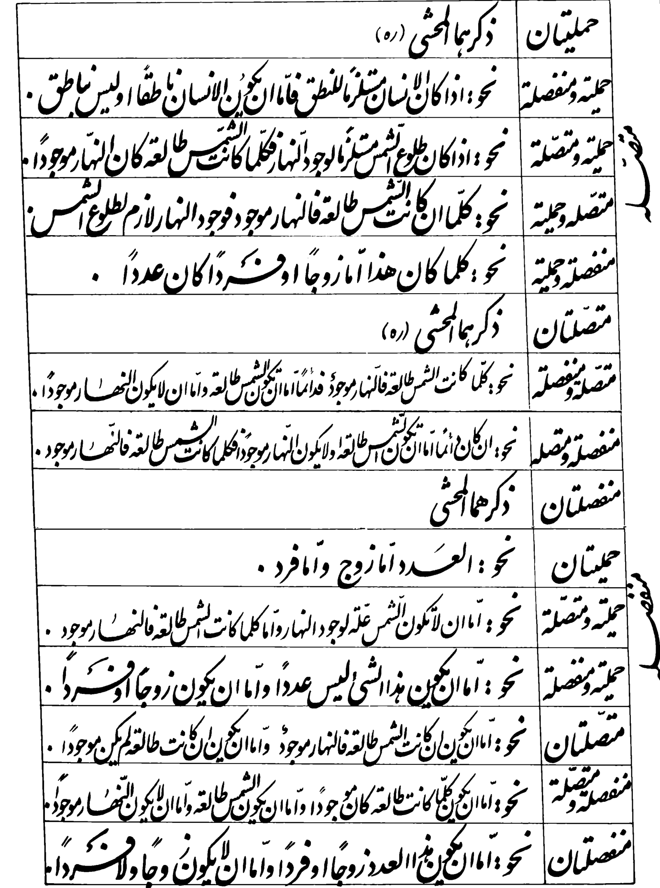

GNAMMA · TAHḎĪB AL-MANṬIQ · LATER GLOSSES · SOURCE-CRITICAL READER
Q309 · Fifteen historical conditional constructions
Textual status: twelve original worked-example positions now have working Arabic–English renderings; three positions instruct the reader to provide obvious examples. This is not a complete photographic/diplomatic collation. Some English is based partly on a later digital edition, and two clauses display substantive print/digital disagreements. Corrections and uncertainties are visible, never silently normalised.
Loading historical source records…

Textual decisions
The first print-digital variant concerns whether human rational speech is described as a property or an entailment. The second, at the final disjunctive–disjunctive example, concerns “even or fractional” in the photographed impressions versus “neither even nor odd” in a derivative digitisation. These are not paraphrases of one reading; the difference is recorded as a source disagreement.
Open full Arabic–English working apparatus · Structured fifteen-entry register · Photo SHA256 evidence